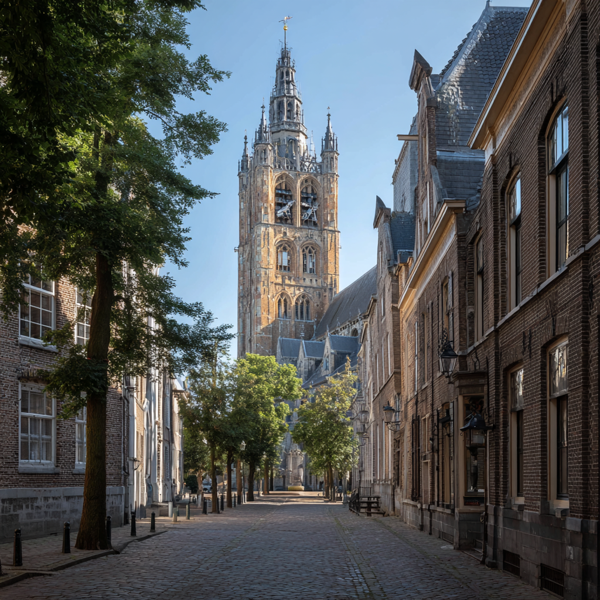
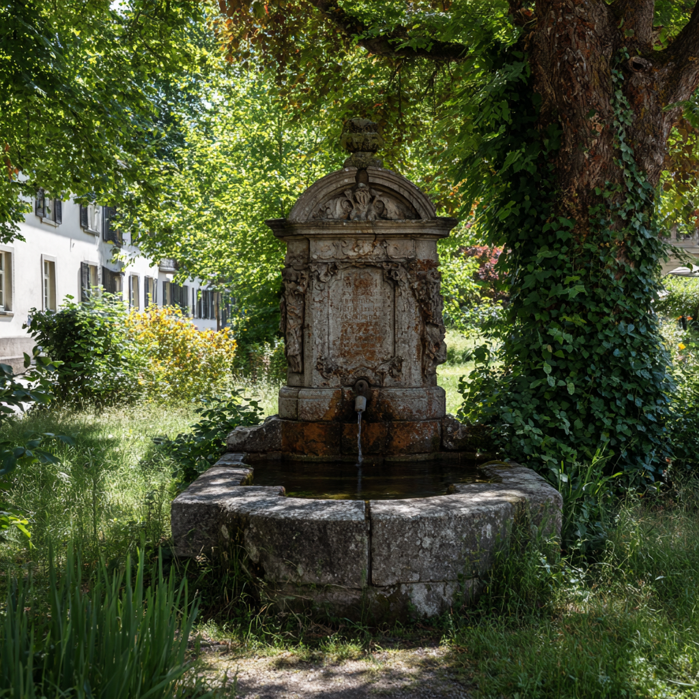

5 Feitjes over Aken
- Eerste Duitse UNESCO-monument (Dom).
- Gelegen op het Drielandenpunt.
- Historisch centrum van het rijk van Karel de Grote.
- Beroemde Akener Printen in vele varianten.
- Heetste thermale bronnen van Centraal-Europa.
De Dom van Aken
De Dom is het hart van de stad en een meesterwerk van architectuur. Het was de eerste plek in Duitsland op de werelderfgoedlijst en de plek waar vele koningen zijn gekroond.

Elisenbrunnen & Thermen
Aken staat al sinds de Romeinse tijd bekend als kuuroord. De Elisenbrunnen is het symbool van de stad en de Carolus Thermen maken nog altijd gebruik van het warme bronwater.
